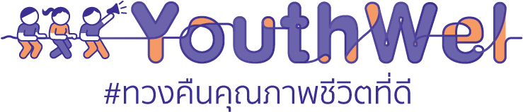
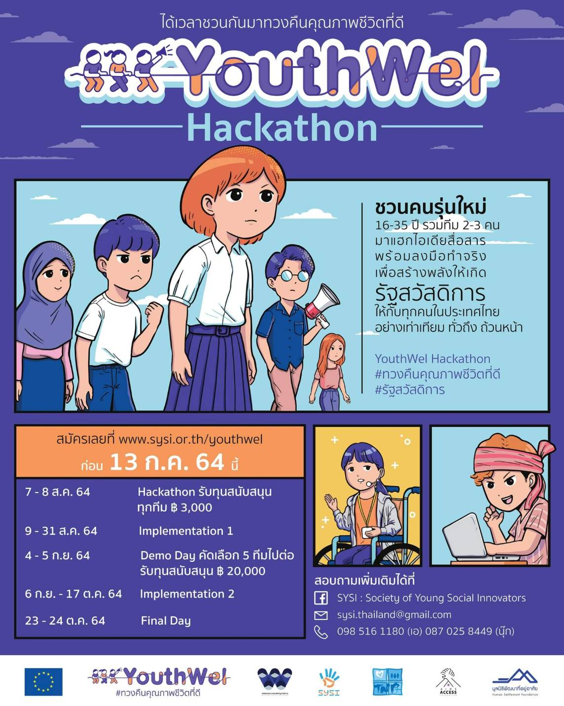
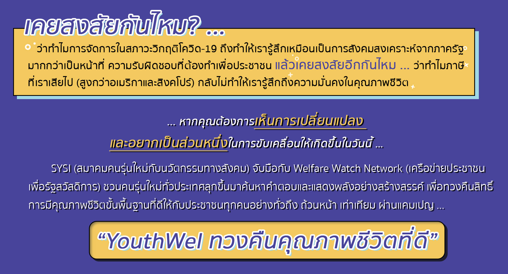

Menu

หน้าหลัก
เกี่ยวกับเรา
แหล่งข้อมูลแนะนำ
ติดต่อทีมงาน
สมัคร


สมัครเข้า YouthWel Hackathon
ABOUT US
เคยสงสัยไหม ว่าทำไมเราถึงต้องทนใช้รถเมล์สุดโทรม พวยพุ่งควันดำที่ไม่ปลอดภัย ต่อทั้งผู้โดยสารและสภาพแวดล้อม? ทำไมเบี้ยผู้สูงอายุถึงอยู่ที่ 600 บาทต่อเดือน ทั้งที่ทุกคนรู้ว่า ไม่มีทางที่ใครจะมีชีวิตอยู่ด้วยเงินเท่านี้ได้? ทำไมนโยบายรัฐสวัสดิการต่างๆจึงทำเหมือนแค่การสงเคราะห์พวกเรา มากกว่าเป็นหน้าที่รับผิดชอบของภาครัฐที่พึงกระทำเพื่อพัฒนาคุณภาพชีวิตที่ดีของประชาชน?
ปรากฎการณ์เหล่านี้เกิดขึ้นเนื่องจากรัฐบาลไม่มีงบประมาณจริงหรือไม่ หากไม่ใช่เช่นนั้นแล้ว เป็นเพราะเหตุใดประเทศไทยจึงไม่มีนโยบายรัฐสวัสดิการที่ดูแลคนไทยทุกคน ได้อย่าง ทั่วถึง ถ้วนหน้า เท่าเทียม และถ้าหากเราต้องการเรียกร้อง ทวงคืนให้รัฐสวัสดิการเกิดขึ้นจะต้องทำอย่างไร
วันนี้ SYSI หรือ สมาคมคนรุ่นใหม่กับนวัตกรรมทางสังคม ร่วมมือกับ Welfare Watch Network หรือ เครือข่ายประชาชนเพื่อรัฐสวัสดิการ ภายใต้การสนับสนุนของสหภาพยุโรป (EU) ชวนคนรุ่นใหม่ทั่วประเทศลุกขึ้นมาค้นหาคำตอบและแสดงพลังอย่างสร้างสรรค์เพื่อทวงคืนสิทธิ์ สิทธิ์ที่จะมีคุณภาพชีวิตที่ดีที่ประชาชนทุกคนควรจะได้รับ ผ่านแคมเปญ “YouthWel ทวงคืนคุณภาพชีวิตที่ดี”
โครงการนี้เริ่มต้นด้วย กิจกรรมลับคมไอเดียอย่าง YouthWel Hackathon ที่จะชวนคนรุ่นใหม่ที่สนใจปัญหารัฐสวัสดิการในประเทศไทย 11 ด้าน ได้แก่ การศึกษา, สุขภาวะทางเพศ, คมนาคม, หลักประกันสุขภาพ, ที่อยู่อาศัย, พื้นที่สาธารณะ, สวัสดิการเด็กเล็ก, บำนาญผู้สูงอายุ, ประกันรายได้ขั้นพื้นฐาน, ที่ดินทำกินเกษตร, การจัดการในภาวะวิกฤตโรคระบาด มาสร้างสรรค์แคมเปญสุด creative ให้ปังและดังไปทั่วประเทศ พร้อมกับได้รับการสนับสนุนความรู้และคำแนะนำจากนักพัฒนาสังคม นักวิชาการ และนักการเมืองที่มีประสบการณ์ด้านระบบหลักประกันสุขภาพถ้วนหน้าและบำนาญแห่งชาติ ที่ผลักดันนโยบายรัฐสวัสดิการแถวหน้าของเมืองไทย
ปิดท้ายปลายปี 2564 ด้วยกิจกรรมที่หลากหลาย ไม่แบ่งแยก สำหรับทุกคน ที่จะเกิดขึ้นทั่วประเทศ เป็นเวลา 6 วันต่อเนื่องในงาน Connect Fest ปี 2: Social Movement Week for All จากเครือข่ายภาคประชาสังคมทั่วประเทศ ที่จะร่วมมือกันมาแสดงพลังในประเด็นที่แตกต่างและหลากหลาย ทั้งเรื่อง ความงามของความแตกต่างหลากหลาย (Beauty of Diversity), ธรรมชาติและสิ่งแวดล้อม (Global Caring), การศึกษา (Education), นวัตกรรมสังคม (Social Innovation), รัฐสวัสดิการ (Social Welfare), ประชาธิปไตยทางตรง (Direct Democracy) และยังมีการจัดแสดงแคมเปญ จากน้อง ๆ ในกิจกรรม YouthWel Hackathon และ โครงการเครือข่ายนวัตกรรมคนรุ่นใหม่ อีกด้วย
เราขอเชิญชวนคนรุ่นใหม่ หรือพลเมืองไทยไม่จำกัดอายุ ผู้มีหัวใจรักประชาธิปไตย เชื่อมั่นในศักยภาพคนรุ่นใหม่และพลังสร้างสรรค์เพื่อการเปลี่ยนแปลงสังคม เห็นความงดงามในความแตกต่างหลากหลาย และอยากขับเคลื่อนสังคมในลักษณะเครือข่าย เข้ามาเป็นส่วนหนึ่งกับเราผ่านการมีส่วนร่วมในรูปแบบต่างๆ
...เพราะคุณภาพชีวิตที่ดีคืออนาคตของพวกเรา ถ้าเราไม่ทำใครจะทำ ที่สำคัญควรเริ่มต้นไปด้วยกันเดี๋ยวนี้เลย...
#ทวงคืนคุณภาพชีวิตที่ดี #รัฐสวัสดิการ #YouthWel
รายละเอียดเพิ่มเติม Facebook Page : SYSI
แหล่งข้อมูลแนะนำ
ลำดับ
หัวข้อ
1
นโยบายรัฐสวัสดิการจำเป็นแค่ไหนกับการศึกษาไทย ?
กด
2
ความเหลื่อมล้ำทางการศึกษาของไทย: ข้อสรุปจากผลการสอบปิซ่า (PISA)
กด
3
หลายคนน่าจะเคยผ่านหูผ่านตากับคลิป “ยกเครื่องประเทศไทยในคลิปเดียว”
กด
4
ความเหลื่อมล้ำ 2020 (1) : เรารู้อะไร เราควรรู้อะไร
กด
5
รัฐสวัสดิการ เป็นทางออกของประเทศไทย : โดย ผาสุก พงษ์ไพจิตร
กด
6
รัฐสวัสดิการสู่สังคมไทยเสมอหน้า(2): รัฐสวัสดิการคือเครื่องมือลดความขัดแย้ง
กด
7
สวีเดนกับรัฐสวัสดิการ ความฝันที่มีต้นทุน (1)
กด
8
สวีเดนกับรัฐสวัสดิการ ความฝันที่มีต้นทุน (จบ)
กด
9
44 ปี มติชน ประเทศไทยไปต่อ : ษัษฐรัมย์ ชูรัฐสวัสดิการขจัดความเหลื่อมล้ำประเทศ
กด
10
“รัฐสวัสดิการจะเกิดขึ้นได้ รัฐและภาคประชาชนต้องไว้วางใจซึ่งกันและกัน” ภาคภูมิ แสงกนกกุล
กด
11
มองรัฐสวัสดิการผ่านเงินบำนาญของประเทศต่างๆ
กด
12
รัฐสวัสดิการอำนาจนิยม
กด
13
กว่าจะมาถึงแนวคิด ‘รัฐสวัสดิการ’: ความแตกต่างของโลกตะวันออกและตะวันตก
กด
14
“รัฐธรรมนูญใหม่ ที่มีรัฐสวัสดิการ เป็นหลักประกันคุณภาพชีวิตของประชาชน”
กด
15
รัฐสวัสดิการกับการแก้ปัญหาสังคม
กด
16
ก่อร่างสร้างรัฐสวัสดิการ
กด
17
101 In Focus Ep.48 : จากรัฐสวัสดิการในโลกตะวันตก สู่การสร้างรัฐสวัสดิการของไทย
กด
18
ศศิวิมล วรุณศิริ ปวีณวัฒน์: เมื่อการมีลูกฉุดรั้งการงาน ถึงเวลาสวัสดิการเพื่อครอบครัว
กด
19
สวัสดิการเพื่อการมีลูกของพนักงานประจำ ‘นอกห้องแอร์’ : ใครร่วงหล่นจากโครงข่ายความคุ้มครองทางสังคม ?
กด
20
ชีวิตดีๆ (?) ที่กรุงเทพฯ : ‘เมืองที่ดี’ กับรัฐสวัสดิการ
กด
21
เมื่อโลกเข้าสู่สังคมสูงวัย สำรวจสวัสดิการผู้สูงอายุแต่ละประเทศเป็นยังไงบ้าง?
กด
22
คนไม่เท่ากัน? รัฐสวัสดิการกับความเหลื่อมล้ำที่รัฐมอบให้ประชาชน
กด
23
แมริกอท จิวเวลรี่ : สำรวจสวัสดิการเพื่อการมีบุตรของ ‘พนักงานโรงงาน’
กด
24
จักรวาลรัฐสวัสดิการ EP.1 : UBI ทางออกระบบสวัสดิการไทย ในวิกฤตโควิด-19
กด
25
ถอดบทเรียนรัฐสวัสดิการใน 3 กราฟ
กด